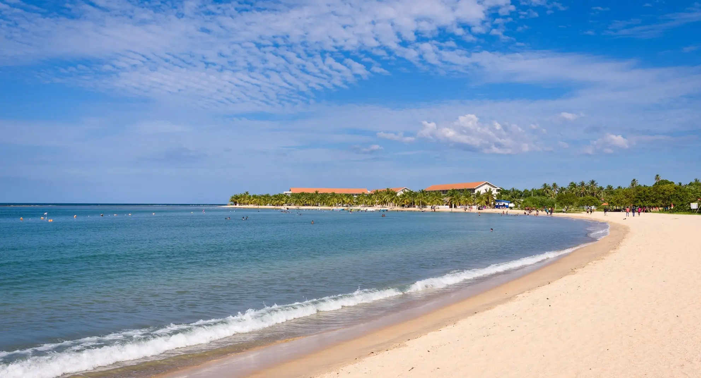
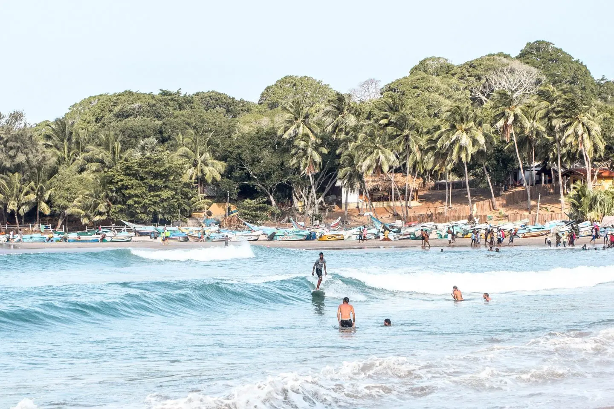
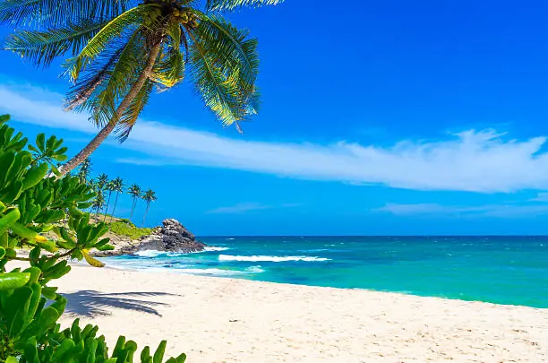

Pasikuda Beach
Located in Sri Lanka's Eastern seaboard between the Indian Ocean and the Kalkuda, Pasikuda is known for its turquoise waters and wide sandy beach. This natural beauty attracts foreign and local tourists who enjoy surfing, swimming, and other water activities. There are also various other activities that can be done in the bay, such as sailing across in a canoe.
Malu Malu Resort & SpaArugambay Beach
Arugambay is a small town located far from Colombo and other tourist attractions in Sri Lanka. It has managed to maintain its small-town charm while attracting a wide range of travelers. It's also known for its beautiful beaches. Known to be a surfers paradise, Arugambay in Sri Lanka has some of the best beaches in the country.
Jetwing SurfUnawatuna Beach
Unawatuna is a beach resort town about two kilometers away from Galle. It is known for its turquoise blue sea and is the only place in Sri Lanka where one can spot a whale shark, which is the largest known fish in the world. It is also home to several turtles, which are known to lay eggs in the areas.
Araliya Beach Resort & Spa